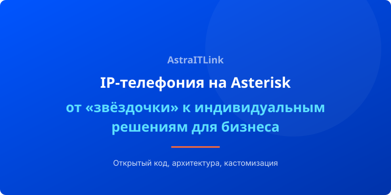

Asterisk — это не просто программная АТС. Это полноценная платформа для построения коммуникационных решений любого уровня сложности. Название переводится как «звёздочка», и за почти 25 лет своего существования Asterisk превратился в стандарт открытой телефонии, на котором строятся миллионы АТС по всему миру.
Открытый код как фундамент независимости
Главное отличие Asterisk от проприетарных АТС (Panasonic, Cisco CallManager, Avaya) — открытый исходный код. Это означает, что вы не привязаны к одному вендору, не платите за лицензии на каждого пользователя и можете модифицировать систему так, как нужно именно вашему бизнесу.
Закрытые АТС часто работают по принципу «чёрного ящика»: вы получаете фиксированный набор функций и не можете повлиять на логику обработки звонков. С Asterisk всё иначе — вы сами решаете, как будет работать телефония.
Архитектура: от сервера к полноценной АТС
Asterisk превращает обычный сервер (или виртуальную машину) в мощную IP-АТС. В основе лежат несколько ключевых компонентов:
- Диалплан (Dialplan) — мозг системы. Набор правил, определяющих, что происходит со звонком: куда направить, какое голосовое меню воспроизвести, как записать разговор.
- Каналы (Channels) — модули для работы с разными протоколами: SIP, IAX2, H.323, а также аналоговыми и цифровыми линиями.
- Приложения (Applications) — встроенные функции: голосовая почта, конференции, очереди, IVR, запись и многое другое.
- AMI/ARI — интерфейсы для внешнего управления. Через них Asterisk интегрируется с CRM, биллингом, AI-системами.
Базовые функции, которые работают «из коробки»
Даже без доработок Asterisk предоставляет богатый функционал:
- Голосовая почта (Voicemail) — с пересылкой на email в аудио-формате.
- IVR (Голосовое меню) — многоуровневые меню с возможностью распознавания тонового набора.
- Конференции (MeetMe/ConfBridge) — аудио-конференции с управлением участниками.
- Очереди звонков (Queues) — распределение вызовов между операторами по заданным стратегиям.
- Запись разговоров (Monitor/MixMonitor) — автоматическая запись всех или выборочных звонков.
- Переадресация и маршрутизация — по времени, номеру, загрузке оператора, географическому признаку.
Главный драйвер — кастомизация
Сила Asterisk раскрывается тогда, когда бизнесу нужны нестандартные решения. Коробочные АТС (как облачные, так и on-premise) хороши ровно до того момента, пока вам не понадобится что-то уникальное:
- Интеграция с внутренней ERP-системой по специфическому протоколу
- Нестандартная логика маршрутизации с проверкой данных из внешней базы
- AI-ассистент, который обрабатывает звонки на основе машинного обучения
- Поддержка экзотических протоколов или оборудования
В такие моменты проприетарные решения упираются в потолок своих возможностей. Asterisk же, благодаря открытой архитектуре, позволяет реализовать практически любую задачу.
Вывод
Asterisk — это не просто «ещё одна телефонная станция». Это конструктор, из которого можно собрать решение любой сложности: от двух линий для небольшого офиса до распределённого кластера на тысячи абонентов с AI-аналитикой и интеграцией во всю IT-инфраструктуру предприятия. И именно эта гибкость делает его выбором №1 для тех, кто мыслит на шаг вперёд.